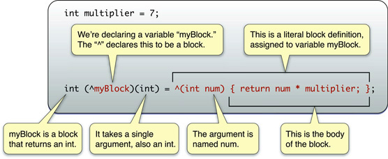

tableview: cellForRowAtIndexPath: methodUITableViewCellWe're going to do something simple. Let's do it in the cellForRowAtIndexPath: method
NSDictionary of attributesKey-Value Store
Remember, tableView: cellForRowAtIndexPath: only gets
called when that cell needs to be redrawn.
Call reloadData: on the TableView
stretchableImage for the UIControlStateNormalstretchableImage for the UIControlStateHighlightedAssets in gitlab step23
Everything has an @2x version
Allows you to pass a method as a variable
NSLogWhen the cancel buton is pressedWhat do we need to change to be able to remove the button and textfield?
We need to convert these to instance variables
textFieldDidEndEditing: Gets called when you leave the textfieldtextFieldShouldReturn: Gets called when you press ReturnendEditing:YES ends the editing of the textfieldGo ahead and try to add the animation out
The animation happened on a different thread.
Code kept executing during animation.
Take a look at the UIView docs
animateWithDuration:animations:completion
Wrap the superview removal in a completion block